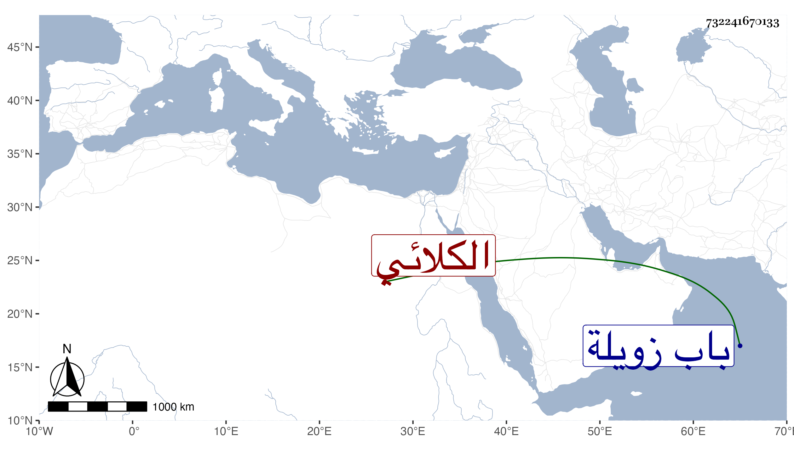

0902Sakhawi.DawLamic.ITO20230111-ara1.EIS1600.732241670133
Biography ID: 732241670133
426
محمد الصلاح الكلائي أحد المذكرين على طريق الشاذلية . كان شاهدا بحانوت خارج باب زويلة ثم صحب حسينا الحبار وخلفه في مكانه فصار يذكر الناس وبدت منه ألفاظ منكرة فيها جرأة عظيمة على كتاب الله وضبطت عليه أشياء مستقبحة وامتحن مرة فذكر لي الحافظ الصلاح الأقفهسي أنه سمعه يقول في تفسير قوله تعالى من ذا الذي يشفع عنده من خل ذل نفسه ذي إشارة للنفس يشف يحصل له الشفاء عوا أي افهموا ، وأنه ذكر ما سمعه منه للزين الفارسكوري ثم مشيا معا إلى السراج البلقيني فأرسل إليه وعزره ومنعه من الكلام على الناس فأقام بعدها قليلا . ومات في مستهل ربيع الأول سنة إحدى ، ذكره شيخنا في إنبائه وثنا الشمس الرشيدي أنه توجه للبلقيني بفتيا فسأله عن محل سكنه فأعلمه فقال هل تعرف في فنطرة الموسكي فلانا وسمى هذا ذكر لي عنه أنه يفسر القرآن بالتقطيع وسرد له ما تقدم فأحضرته فأنكر فقلت له أسرتك البينة ثم منعته ، وأرخ العيني وفاته في يوم الثلاثاء ثاني ربيع الآخر وأنه دفن عند شيخه حسين ، قال وكانت جنازته مشهودة . قلت وقد حضر إلى سبط له يسألني عن تاريخ موته فذكر لي أن اسم والده عمر وأنه كان شافعيا ونسبته لكفر كلا من الغربية وأن شيخه الحبار ممن أخذ عن ابن اللبان .
